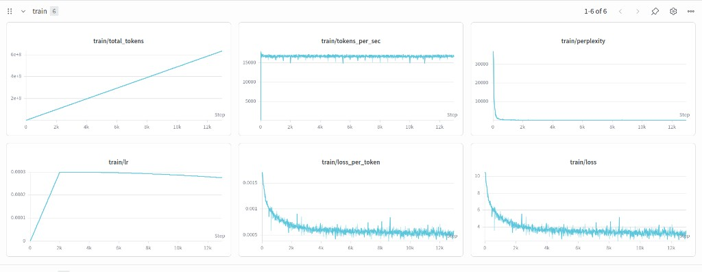

Same 12-layer, 768-dim backbone as v1 Small with a much wider feed-forward (3072) and 512 token context. Pre-training: FineWeb-Edu for ~0.6B tokens. Recipe in configs/tiny_llama_v1_base.json. Run python run_model.py and enter your HF repo, or pass --repo / --weights + --config + --tokenizer-repo.
Key features
| Layers | 12 |
| Hidden dim | 768 |
| Attention heads | 12 |
| KV heads | 4 |
| Head dim | 64 |
| FFN dim | 3,072 |
| Max seq length | 512 |
| Vocab (config) | 10,000 |
| RoPE theta | 10,000 |
| RMS norm eps | 1e-5 |
| Attn dropout | 0.1 |
| MLP dropout | 0.1 |
| Batch size | 12 |
| Learning rate | 3e-4 |
| Min LR | 3e-5 |
| Weight decay | 0.1 |
| Warmup steps | 100 |
| Max grad norm | 1.0 |
| Grad accum steps | 8 |
| Mixed precision | Yes |
| torch.compile | Yes |
| LR schedule | Cosine |
| Eval interval | 500 |
| Dataset | FineWeb-Edu |
| Tokens (approx.) | ~0.6B |
Training results
FineWeb-Edu run: total tokens, throughput, perplexity, LR schedule, loss per token, and training loss (W&B dashboard below).
